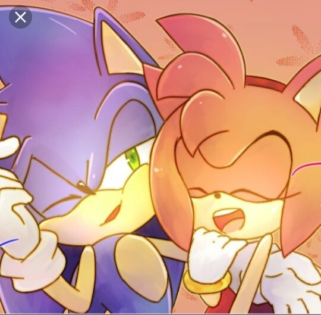
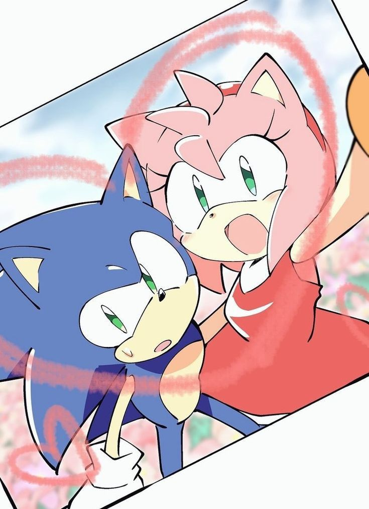
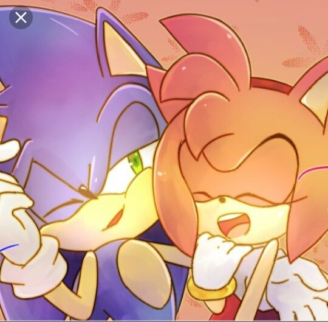
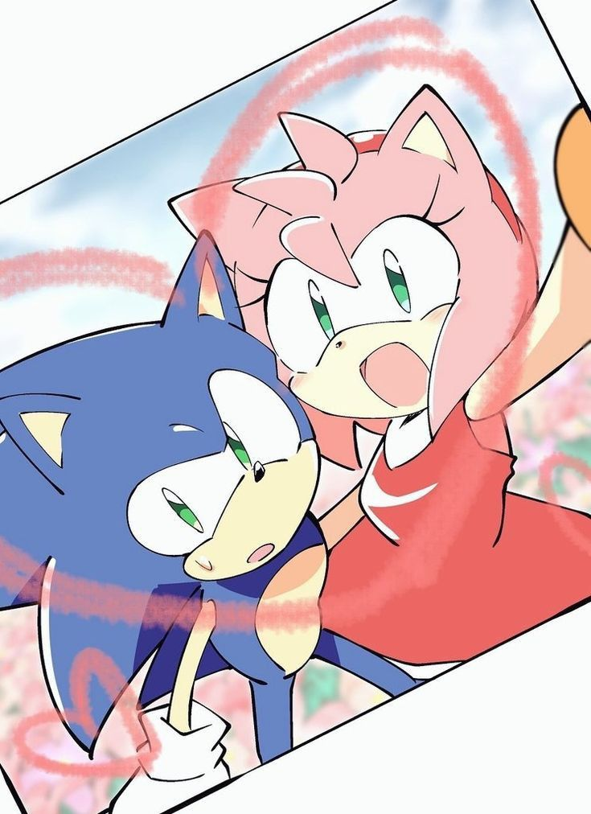
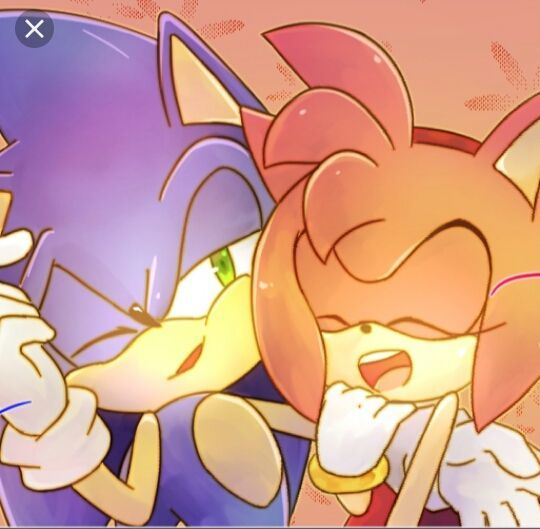
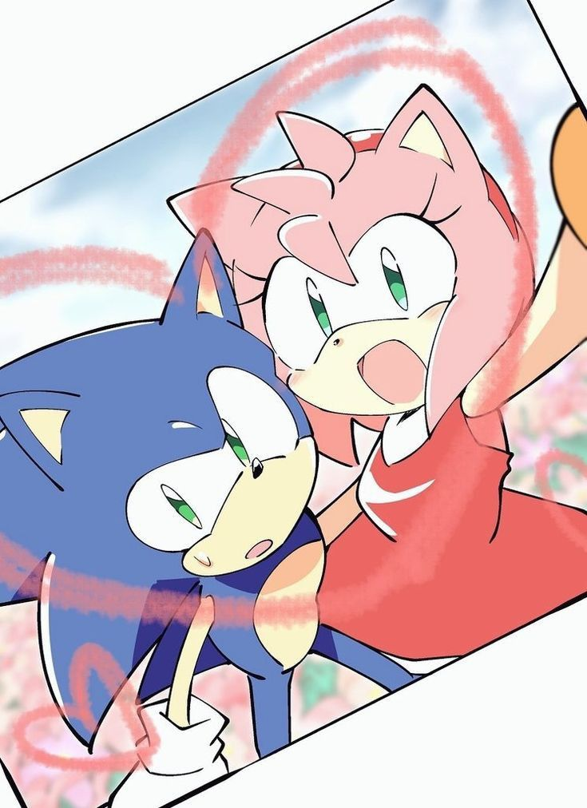
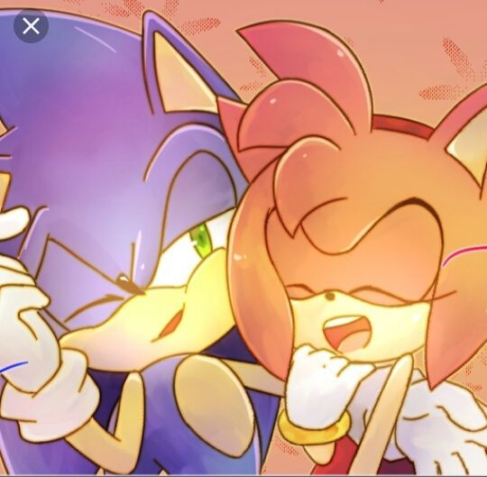
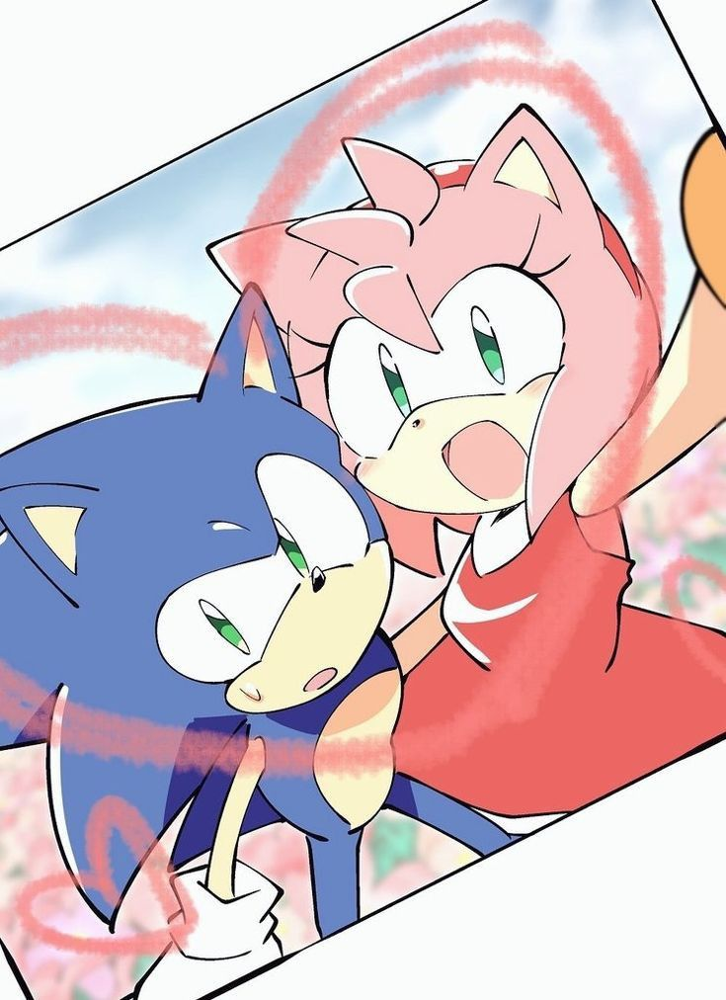

Holaaaaaaaaaaaa uu jajaja, hace muchooooo tiempo quería dedicarte algo que
pueda hacer con mis propias manos, pero como sabes la U y el trabajo quitan
tiempito :c. Jaja, aún recuerdo el dibujito que te hice, jaja. Pero bueno,
jaja, aún recuerdo la primera vez que te vi en ese cortamonte: tenías tu
pelo corto jaja todo lindo, y desde ese momento me llamaste la atención.
Pero como soy un tímido de asdawd jaja, no tuve el valor ni siquiera de
dirigirte la palabra. Pasó tiempo, jaja, hasta que por obra del destino
coincidimos en el Paradise xd. Ese día no sabía qué hacer: estaba ansioso,
con un poco de miedo de malograrla jaja. Quizás no soy un chico perfecto,
lindo, “gilero” jaja. Quizás tuve oportunidades para expresarte lo que
siento, pero el temor de ser rechazado me invadía.
Al verte no sé qué me pasa: mi mente queda en blanco y solo pienso en ti y
en esos ojitos tan lindos que tienes. Tu forma tan sincera y bonita de
hablar me hace sentir anonadado. Jaja, el día que te escuché gritarme me
quedé impactado, jajaja; supe ese día que tenías un carácter fuerte, pero a
la vez gentil; una chica tranquila, una chica que siempre está alegre, con
esa sonrisa risueña tan linda. Eres una chica verdaderamente maravillosa,
alguien con quien disfruto cada instante, desde las risas compartidas hasta
los silencios cómplices. Jsjs, me encanta la manera en que te expresas: esa
confianza serena que transmites sin esfuerzo; la forma en que nombras tus
emociones y enfrentas todo con una mirada tan única que, incluso en los
días más grises, encuentra belleza. Esos ojitos que tienes, ¡dios mío!
Admiro cómo, a pesar de las dificultades, sigues de pie, luchando contra
las adversidades que intentan frenarte, pero no lo logran: sigues adelante
día tras día con una fuerza inquebrantable. Aun cuando tú misma mencionas
que tienes defectos, yo veo cualidades que te hacen única: la dulzura de
tu risa, tu acento peculiar que susurra historias de autenticidad. Adoro tu
presencia en mi vida, esa luz que irradias y que ha iluminado mis días más
oscuros; esa risa tan auténtica y verdadera que, a pesar de que me dijiste
que no te gustaba, a mí me encanta jajaja.
Quizás últimamente te siento más distante, más fría; quizás ya te
aburriste de mí jaja, pero solo quería expresar lo que mi corazón calló
todo este tiempo. Tal vez me dejes de hablar algún día como ya lo hiciste
jajaj, pero quiero que sepas que siempre puedes contar conmigo, y cuando
necesites a alguien, créeme que siempre estaré ahí para ti. Tú ya sabes lo
que siento por ti, aunque quizás mis acciones nunca lo demostraron. Mi
corazón siempre calló lo que mi mente habló, pero bueno jaja… No sabemos
lo que nos deparará el destino: quizás sigamos juntos, quizás nos
volvamos unos desconocidos (ojalá no ;c). Pero quiero que sepas que siempre
serás “My King of Woman ❤️💕” jaja. Sin más nada que decir, siempre que me lo
permitas quiero pasar tiempo contigo uu: saliendo, ir a comer ramen, tomar
soju o un calentito jajaja, o hacer mil cosas sin temor al qué dirán.
Prepárate para pasarla bien ;3
HORA: 5:25 PM
LUGAR: Open Plaza para ir al cine uu
No faltes uu